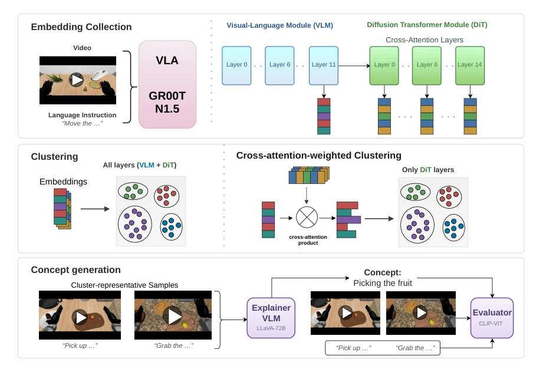
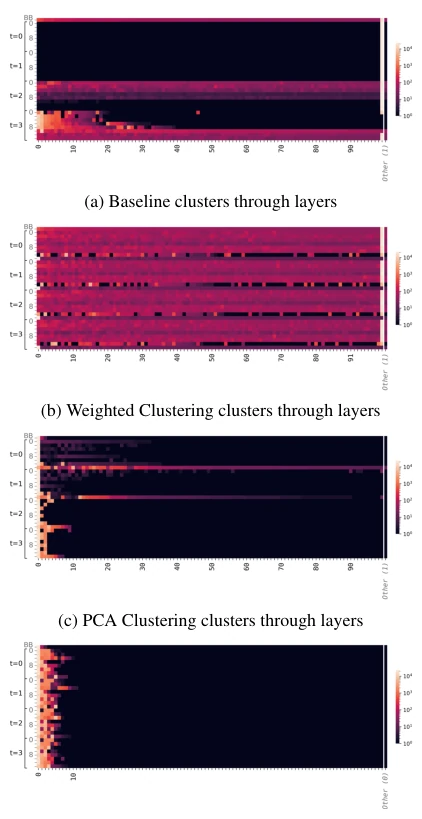
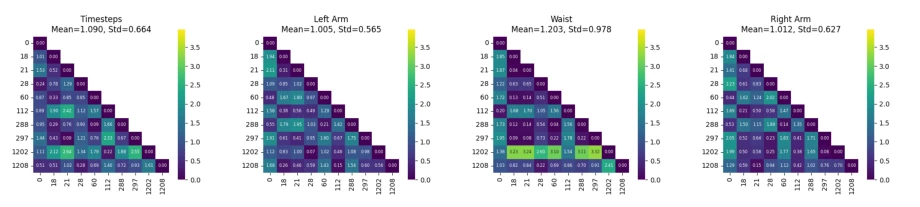
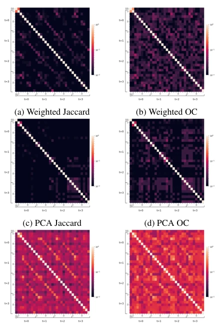
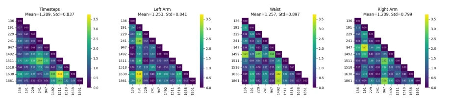
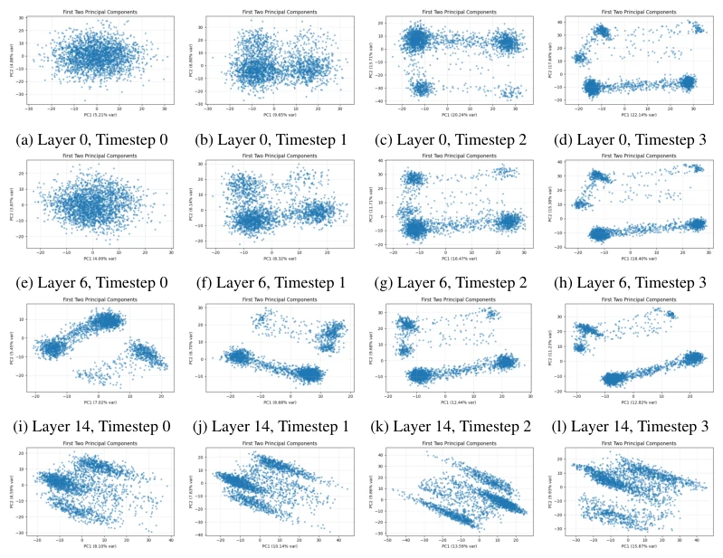
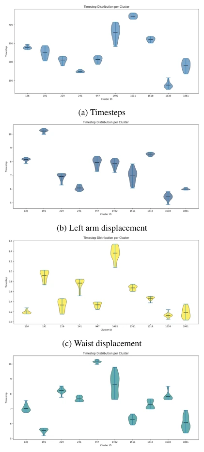
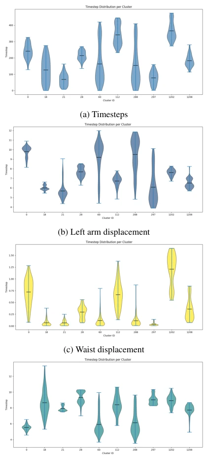

VLA 模型在机器人领域表现优异，但内部推理机制不明，存在安全隐患。现有工作如 Häon et al. (2025) 仅关注 FFN 激活，未深入动作解码器。稀疏自编码器（SAEs）虽流行（Huben et al., 2024），但训练成本高且慢，不适合快速迭代的机器人领域。聚类方法无需重训，更合适。然而，现有聚类未考虑动作扩散过程中的时序噪声，导致早期层聚类混乱。本文旨在填补这一空白，通过分析动作解码器的潜在空间，提升语言驱动系统的可信度，解决分布外场景下的不可预测行为问题，为安全部署提供理论支撑。
—

Figure 1: Overview of our framework. We collect embeddings (coloured bars) from the last VLM backbone layer and the DiT action decoder. After the collection, we compute two different cluster typologies: baseline clustering applied to all embeddings from each layer; our embedding-weighting module steers the VLM backbone tokens according to their influence in the cross-attention layers. Finally, we generate concepts based on the top-n nearest samples for each cluster and evaluate each of them with CLIP.
Figure 7: Comparative UMAP visualisations of the la- tent space at different layers and diffusion timesteps using PCA-compressed embeddings without and with a weighting mechanism.
Figure 3: Mean number of clusters over diffusion timesteps

Figure 2: Heatmaps of cluster sizes across different layers and LAVLA configurations.

Figure 5: Wasserstein distances between feature distributions of top clusters within VL backbone
其他图片Other Figures

Figure 4: Layer-wise cluster overlap matrices for differ- ent LAVLA configurations.

Figure 6: Wasserstein distances between feature distributions of top clusters of cross-attention layer 14 at final diffusion timestep (t=3).

Figure 8: Visualisation of the first two principal components of the latent space across layers (rows) and timesteps (columns). Each subplot shows the latent space structure for a specific layer–timestep combination, illustrating how latent representations evolve through the network.

Figure 11: Violin plots of feature distributions of top clusters of cross-attention layer 14 at final diffusion timestep (t=3).

Figure 10: Violin plots of feature distributions of top clusters within VL backbone